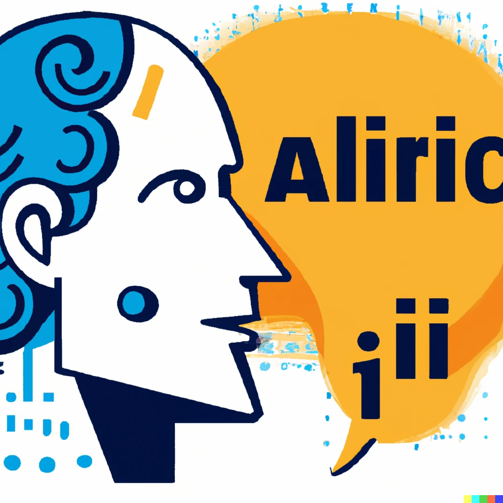

Image generated with DALL.E.2
Introducing AI (Artificial Intelligence)
What is AI
AI refers to the development of computer systems that can perform tasks that typically require human intelligence..
Which tasks can AI perform?
- Learning
- Reasoning
- Problem-solving
- Understanding Natural Language
- Perception
- Creativity
What is Natural Language Processing?
NLP is a subfield of AI that focuses on enabling computers to understand, interpret, and generate human language. This involves tasks such as language translation, sentiment analysis, question-answering systems, chatbots, and summarization.
What is ChatGPT?
Chatbot Generative Pre-trained Transformer, is an advanced AI language model developed by OpenAI.
ChatGPT is trained using a two-step process:
- Pre-training: the model learns from a large dataset of text collected from the internet, which helps it understand grammar, facts, and some reasoning abilities.
- Fine-tuning: Involves training the model on a smaller dataset, typically generated with the help of human reviewers, to refine its behavior
How can I use ChatGPT?
- Ask questions related to a project. ChatGPT can provide information on a wide range of topics, acting as a useful resource for research projects, essays, or presentations.
- You can ask for explanations, definitions, or additional information on specific subjects to supplement your research.
- Use it as a Brainstorming tool.
- Learn a language or provide translations.
- Clarify Concepts.
- It can help you Develop Critical Thinking when you analyze and evaluate the information provided by ChatGPT, comparing it with other sources and discussing its accuracy, relevance, and potential biases.
- Learn more about a personal interest, hobby, or career paths, by asking for information, advice, or resources related to their chosen area of interest.
Drawbacks of using ChatGPT?
- ChatGPT may sometimes provide incorrect, outdated, or incomplete answers, as it relies on the data it was trained on, which may not always be up-to-date or comprehensive.
- ChatGPT's training data cuts off in 2021. This means that it is completely unaware of current events, trends, or anything that happened after its training.
- It can occasionally fail to grasp the nuances or complexities of a question or topic, leading to irrelevant or confusing responses.
- Since all the content is internet based, may unintentionally generate biased, inappropriate or offensive content.
- You may become overly reliant on ChatGPT for answers and guidance, which could hinder the development of critical thinking and independent problem-solving skills.
- Since it generates text based on existing information, you inadvertently use content without proper attribution, leading to plagiarism issues.
- It can occasionally fail to grasp the nuances or complexities of a question or topic, leading to irrelevant or confusing responses.
- Since all the content is internet based, may unintentionally generate biased or offensive content.
- Lack of Human Touch: Empathy, emotional intelligence and cultural sensitivity may not be included in the generated content.
- Privacy: users' interactions with the AI could be stored or analyzed, potentially exposing personal or sensitive information.
Generative Artificial Intelligence Policy:
Generative artificial intelligence (AI) tools are only allowed with the express permission of the instructor. Students who use and do not disclose the use of generative artificial intelligence authoring tools will receive an automatic failure for the assignment and initiate the University of Miami honor code process for plagiarism. The instructor uses AI content detection tools and will communicate to the student when such tools or other heuristic evidence indicates a possible infraction.